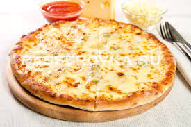

Пицца
Пицца 4 сыра
Сыр дорблю - по вкусу,
Сыр пармезан - 1 кусок ,
Смесь итальянских специй - по вкусу,
Сахар - 3 чайные ложки ,
Сыр моцарелла - 1 кусок,
Молоко - 250 мл,
Пшеничная мука - 500 г,
Растительное масло - 6 столовых ложек,
Соль - по вкусу,
Оливковое масло - по вкусу,
Сухие дрожжи - 10 г,
Куриное яйцо - 2 штуки,
Сыр фонтина - 1 кусок

Пицца маргарита
Ингредиенты: Сахар - 3 чайные ложки ,
Сыр моцарелла - 1 кусок,
Молоко - 250 мл,
Пшеничная мука - 500 г,
Растительное масло - 6 столовых ложек,
Соль - по вкусу,
Оливковое масло - по вкусу,
Сухие дрожжи - 10 г,
Куриное яйцо - 2 штуки,
Помидорка - 2 штуки,
Базилик - по вкусу

Пицца пеперони
Ингредиенты: Тесто для пиццы - 1 штука, Сыр моцарелла - 250 г,
Оливковое масло - 2 столовые ложки, Сырокопченая колбаса - 200 г,
Перец чили - 1 штука, Помидоры в собственном соку - 1 банка,
Орегано - 1 чайная ложка, Сушеный базилик - 1 чайная ложка,
Чеснок - 1 зубчик, Сахар - 1 чайная ложка,
Соль - по вкусу, Молотый черный перец - по вкусу